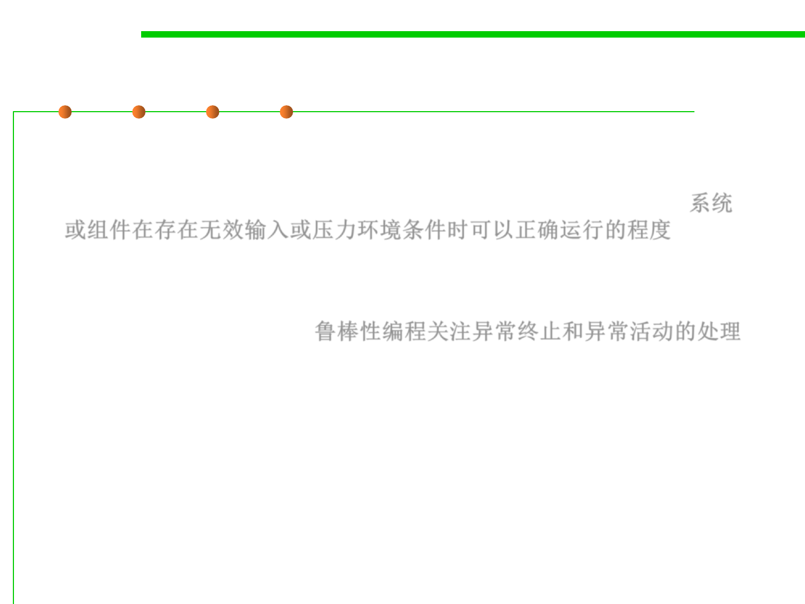

Robustness
7.1 Robustness & Correctness
▪ Robustness(鲁棒性/健壮性): “the degree to which a system or
component can function correctly in the presence of invalid inputs
or stressful environmental conditions“ (IEEE Std 610.12-1990)系统
或组件在存在无效输入或压力环境条件时可以正确运行的程度
▪ Robust programming
– A style of programming that focuses on handling unexpected termination
and unexpected actions. 鲁棒性编程关注异常终止和异常活动的处理
– It requires code to handle these terminations and actions gracefully by
displaying accurate and unambiguous error messages. These error
messages allow the user to more easily debug the program.